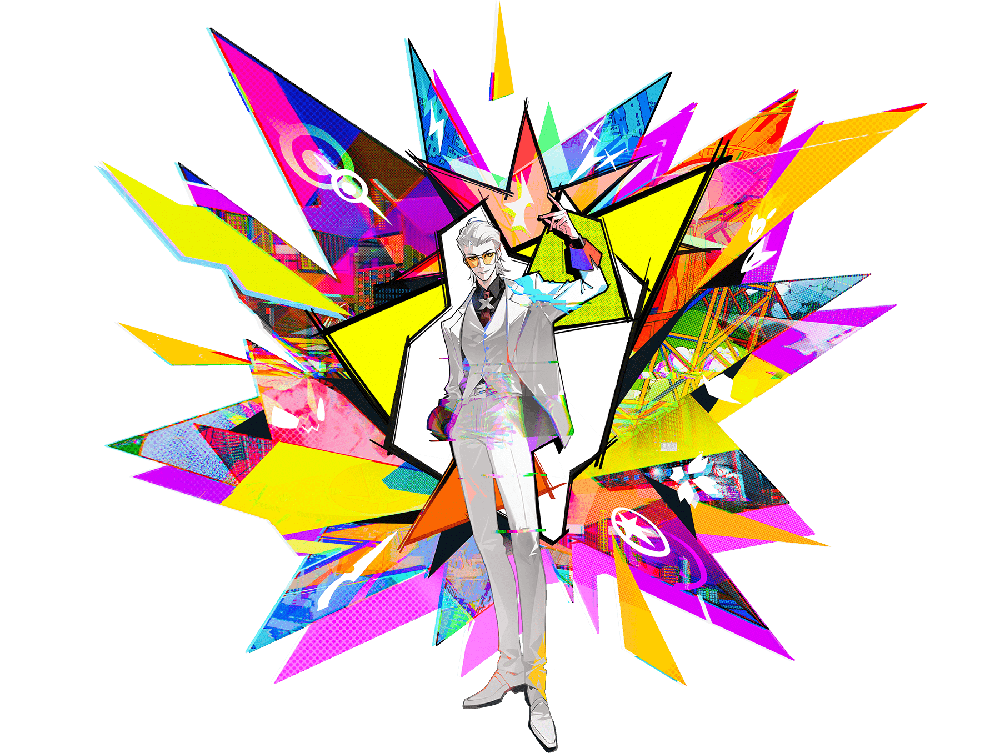
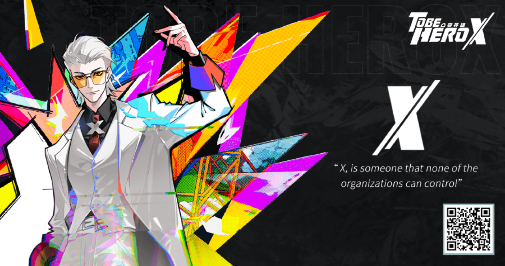
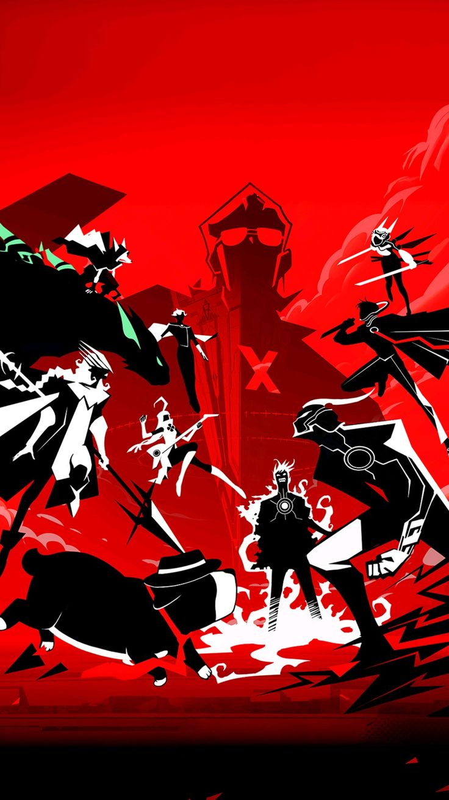
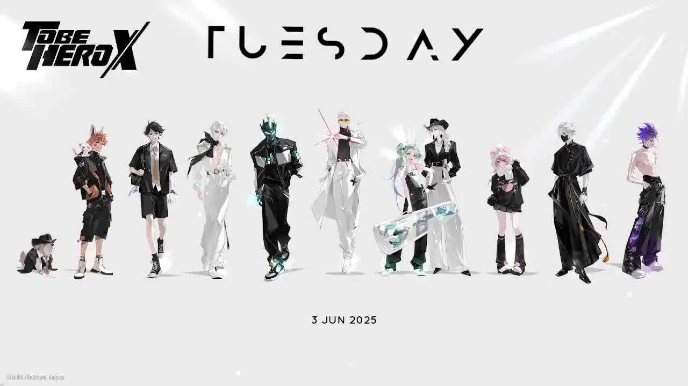
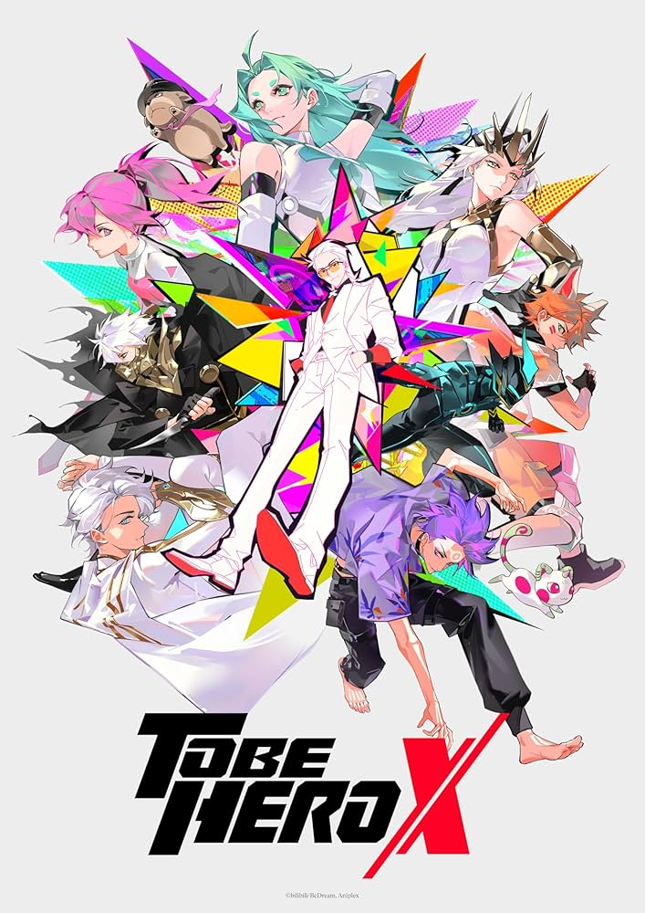
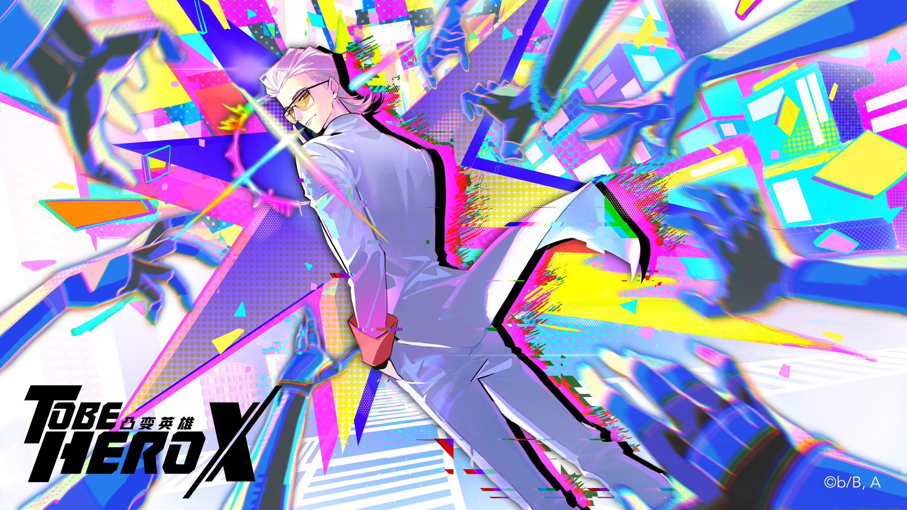
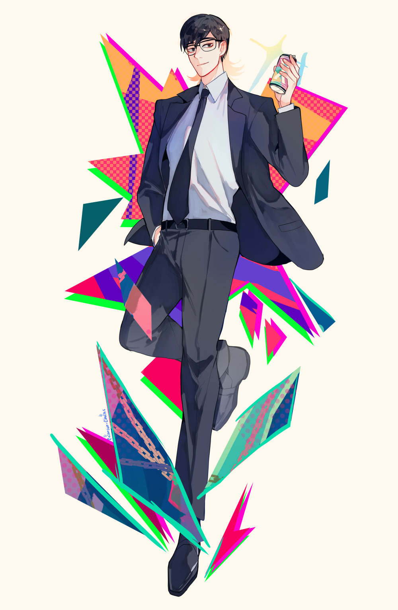
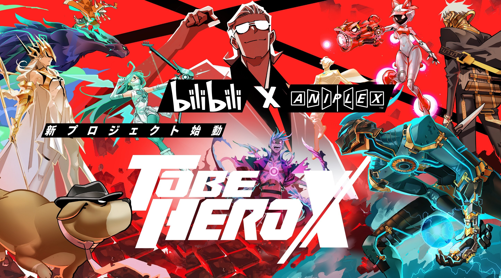
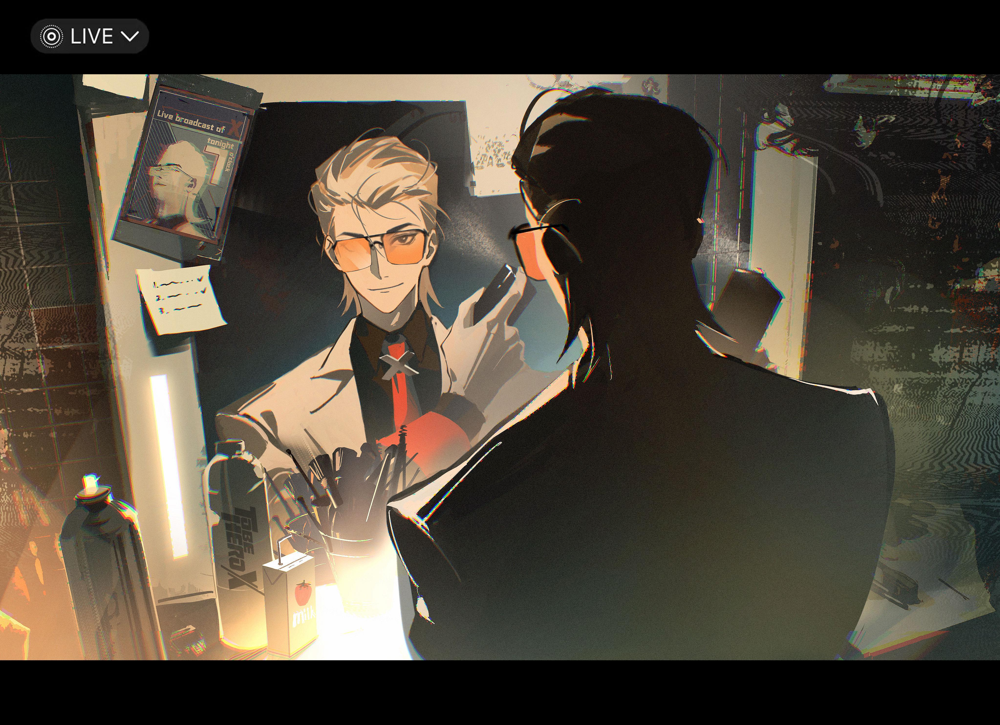

Who is this mysterious figure? Well, he is the secret character from the ongoing 2025-2026 show: To Be Hero X, a Chinese animated series coauthored by a Japanese studio working with the Chinese studio. Throughout the show, he takes on several ambiguous roles with goals that can be at times hard to understand. So let's break it down and show you what he's all about. Click on the Bulleted Box on the right to jump to different sections on this page.

In a world where organizations hold significant power, Mr. X represents a force that operates beyond their control. His ideals challenge the status quo and inspire others to question authority. He is the embodiment of resistance against oppressive systems. When companies rule the world, they throw shade onto as being dangerous. This is because power in this world is granted based on people's trust in that person. So the companies argue Mr X is a threat. However Hero X puts into stark question the illicit activities of the organizations, asking as to ponder who our real enemies are in society.


X, as he is often called, possesses extraordinary abilities that transcend the limitations imposed by society. His powers are not just physical but also mental and spiritual, allowing him to overcome seemingly insurmountable challenges. With the wave of his hand and the snap of his fingers, he can change how the world is viewed. This is highly symbolic of his character throughout the show, as this proves true both physically, mentally, and societaly. In the end, X sees power as a means to an end, rather than an end in itself, like the companies. He shows us that it is how we have been raised that defines how we see the world, which is so much larger than anyone can tell us.


*** CLICK ON HIM YOURSELF ON THE RIGHT! ***
Mr X maintains a clear and calm composure that would make anyone jealous, but it sends a clear message about his inner strength and determination. But this comes entirely from within, not feeding into external gratification or attachment. The message is that when we are in the right, we can always remain calm, a form of quiet confidence and dominance that will speak for itself in any situation. That is the Essence of the Hero X in all of us. We don't need external validation to feel powerful, we only need to believe in ourselves and not rely on anyone or anything else to dictate our worldview for us. While there is indeed anguish, there is true power and confidence in knowing the truth about our world.


